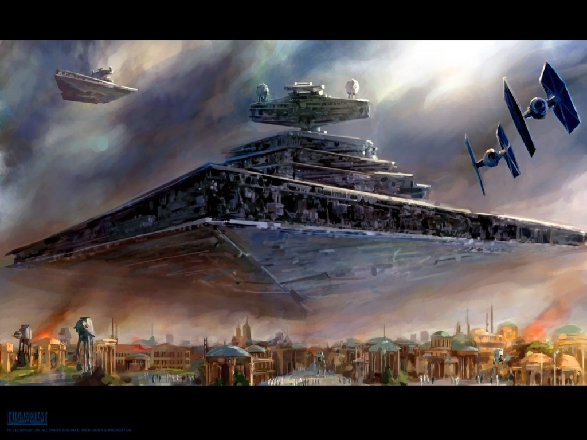

La inmensa flota imperial mantiene la PAZ instaurada en la galaxia gracias al poder de nuestro siempre bienamado Emperador Palpatine. Solo los mejores conciudadanos pueden servir en la poderosa Armada Imperial, donde serán capaces de mantener los preceptos de obediencia y respeto al orden establecido. Para los miembros de la flota hay una infinidad de puestos que ocupar, desde las novedosas plataformas de defensa Cardan V hasta los inmensos Superdestructores, los Puños del Emperador. Los grandes oficiales de nuestros días, los heroes del Imperio, como el Gran Almirante Thrawn o el Gran Moff Tarkin, fueron reclutas y miembros de la Academia Superior de la Flota Galactica. Alistate y con unos años de esfuerzo comenzaras pilotando los rápidos y letales cazas TIE, para seguir ascendiendo y llegar a comandar flotas enteras de Destructores de la clase Imperator. No lo dudes y viaja por los sistemas llevando los ideales de nuestro gran imperio, extiende nuestra influencia hasta los confines de la galaxia, se un miembro de la FLOTA.
